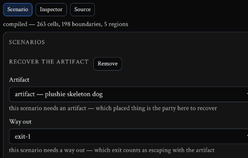
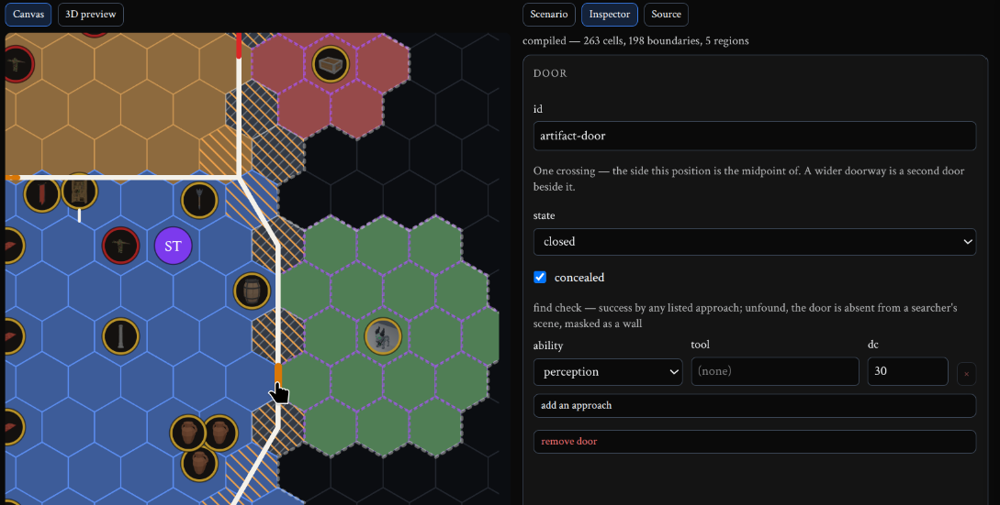
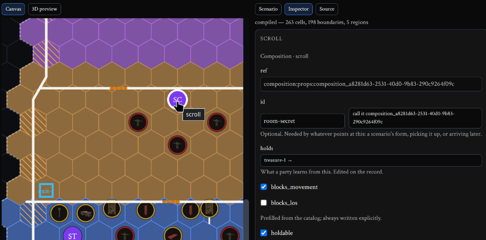
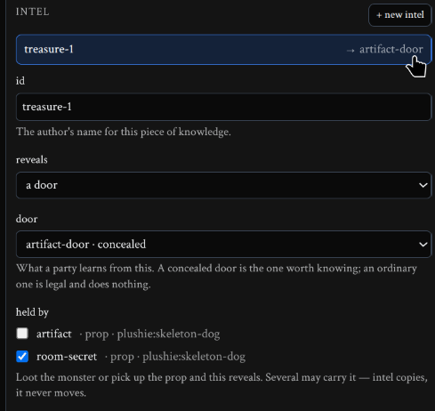
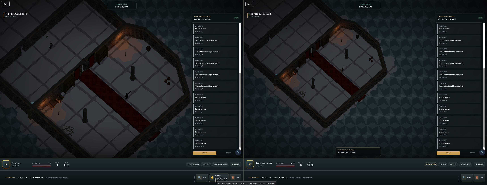
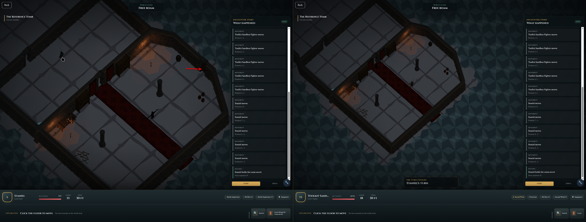
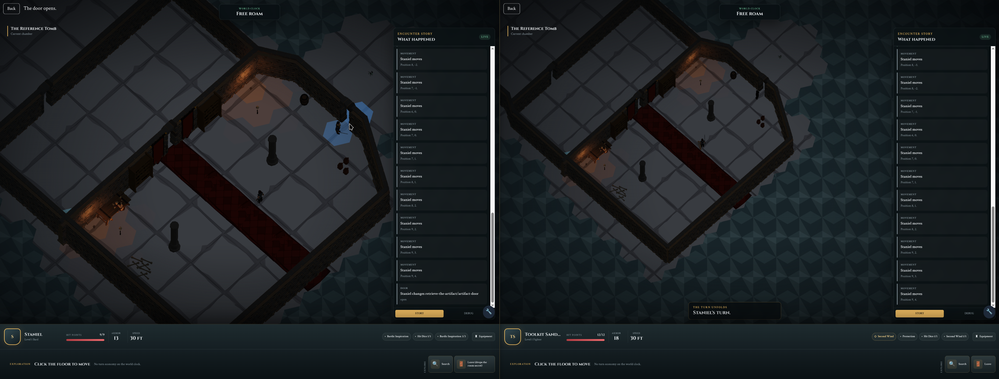
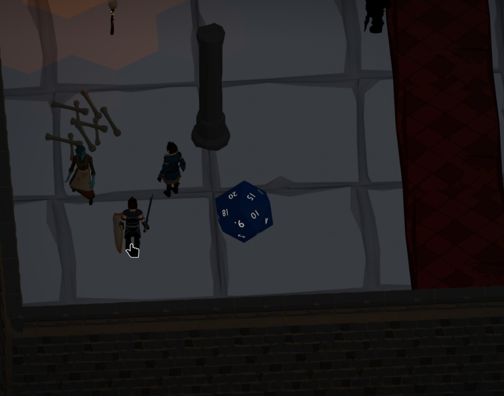

At a tabletop, everyone might hear the DM describe something only one character noticed. Players are expected to separate what they heard from what their character knows. I wanted the game to make that distinction real.
In my game, two people can stand in the same dungeon and see different things. A monster one character can see might be hidden from another. When it leaves sight, a shadow marks where that character last saw it—not where it is now. A concealed door can be known to one player and still look like a wall to their teammate.
Here’s a small adventure built around that idea, using the authoring tools and gameplay available today.
Give the creator an objective, not a prescribed route
The scenario is simple: retrieve an artifact and leave through the designated exit. I could put both beside the starting position and call it done. The objective would still work.
Instead, I placed the artifact behind a concealed door.
{kind=link}

{kind=link}

Put the knowledge somewhere in the dungeon
My prop builder lets me assemble assets into reusable compositions and place them in a dungeon. For this clue, I used an envelope-like prop, named “scroll” in the editor.
I gave it a piece of intel called treasure-1 and configured that intel to reveal the artifact’s door. The clue’s placement has three zombies guarding it; I removed them for the discovery demonstration below so the change in the two players’ views is easy to follow.
{kind=link}

room-secret. It holds the intel treasure-1. View full size ↗{kind=link}

treasure-1 reveals artifact-door, and room-secret carries it. This earlier configuration capture still shows the placeholder prop; the scroll uses the same room-secret ID. View full size ↗The intel is what ties the object to the discovery. I choose what the knowledge reveals and where players can acquire it, without writing custom code for this dungeon.
Finding the clue changes one character’s knowledge
These are two clients connected to the same session: Staniel on the left and the fighter on the right.
{kind=link}

{kind=link}

The knowledge belongs to the character who acquired it. Being in the same party doesn’t automatically give both characters the same discoveries.
Opening the door changes what both can see
{kind=link}

That’s the distinction I wanted: finding the clue changes what one character knows. Opening the door changes the world they’re both looking at.
The scenario still asks for the same thing—recover the artifact and escape. The creator decides what stands between the players and that goal. This walkthrough stops at opening the passage; it demonstrates discovery, not the completed victory condition.
Still gathered around the same dice
Separate knowledge doesn’t mean separate experiences. Attack dice roll in the dungeon itself, where the players can watch them together.
{kind=link}

How I’m building it
I use agentic AI throughout development, but my starting point is the behavior I want someone to experience. Here, it’s two players learning different things in one shared world.
From there, I work through ownership: the toolkit owns rules and knowledge, the API coordinates state and transport, and the client presents the player’s view and sends their intent. I delegate scoped implementation, inspect the code and architectural boundaries, use independent reviews and automated tests, and return to the game to check what actually happens.
Professional Synty assets removed a major visual-production bottleneck. The recent work on composable play and world systems has opened up the other side: places for exploration, knowledge, and relationships to belong alongside combat. This small scenario is one visible result.
That’s why I’m building the tools as well as the game. I want a streamer or moderator to make an adventure for their community—not just rearrange the adventure I thought of first.
Read the architectural journey: Where Everything Meets · Explore rpg-toolkit
Screenshots are from the current development build. Game artwork uses purchased Synty assets; the composition tools, dungeon authoring, and gameplay systems are part of this project.